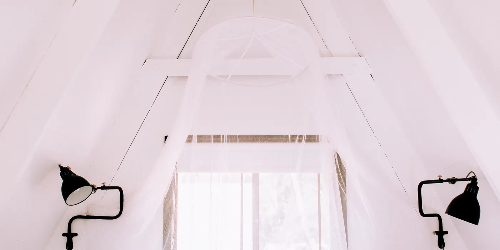
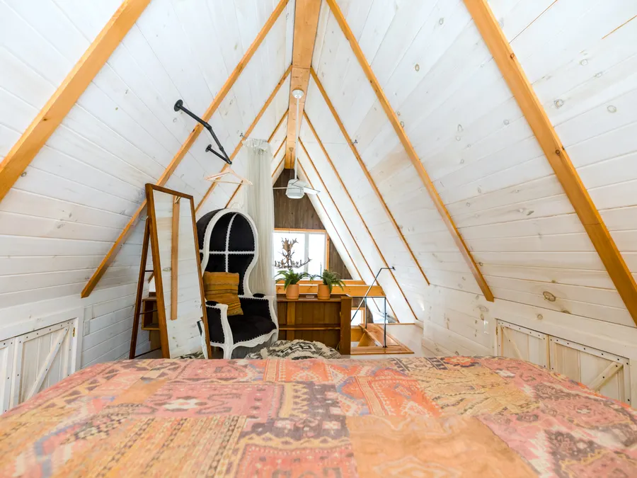

Vindsinredning · fast pris efter besiktning
Vindsinredning som ger varm yta i ett gammalt hus
Först besiktigar vi takstolar och bjälklag, eftersom de avgör hur mycket vinden tål och vilken takhöjd du kan få godkänd. Sedan isolerar vi taket, sätter in takfönster, bygger trappan och gipsar snedtaken. Efter besiktningen lämnar vi fast pris. Familjen Kalström i Vasastan fick 42 m² inredd vind för 640 000 kr på 9 veckor.
Vad du får
Takhöjden finns redan, du betalar för isolering och inredning
En råvind i ett hus från tidigt 1900-tal har ofta 30 till 60 m² golvyta som ingen använder. Vi bygger om den till sovrum, arbetsrum eller gästrum och behåller husets takform, så att fasaden och detaljplanen ser ut som förut.
Priset avgörs av ytan, av hur takstolarna ser ut och av om det redan finns en trappa upp. En vind där bjälklaget klarar vanlig rumslast och där takhöjden redan är 1,9 meter kräver mindre arbete än en vind där varje takstol måste förstärkas och golvet läggas om. Därför besiktigar vi innan vi räknar, och därför står det ett intervall i tabellen längre ner i stället för ett enda tal.
Vi har 14 anställda, varav 9 hantverkare och 3 arbetsledare, och har genomfört 312 projekt i Stockholmsområdet sedan 2004. Vindar gör vi mest i Vasastan, Södermalm, Kungsholmen och Bromma, där husen är byggda mellan 1890 och 1930 och ofta redan har en öppning eller ett städskåp upp till vinden. Den öppningen bygger vi om till en riktig trappa med räcke och belysning.
Golvyta med minst 1,9 meter takhöjd. Yta under snedtaket räknas bort, eftersom den inte går att möblera.
Isolering och trappbygge tar längst tid. Du kan bo kvar i resten av huset under hela arbetet.
Efter besiktning lämnar vi fast pris på hela arbetet, skriftligt inom 24 timmar på vardagar.
Omfattning
Vad som ingår i en vindsinredning
- Besiktning av takstolar och bjälklag, med mätning av takhöjd, spännvidder och fuktnivå i träet. Du får bedömningen skriftligt innan vi räknar på priset.
- Förstärkning av bjälklag och takstolar där beräkningen kräver det, till exempel dubblade reglar eller en ny bärande balk.
- Isolering av taket, normalt 400 mm lösull eller mineralull mellan och över takstolarna, med ny vindskiva.
- Ångspärr mot uppvärmd yta, tejpad i alla skarvar och ansluten till golvspärren, så att fukten inte vandrar upp i konstruktionen.
- Takfönster eller gavelparti med infälld karm, ny tätning och beslag som leder bort vatten från infästningen.
- Ny trappa till vinden, 45 000–90 000 kr om ingen trappa finns i dag, inklusive räcke, framledningsbelysning och färdig målning.
- El: nya uttag, takbelysning och egna grupper, kopplat av registrerad elinstallatör via jordfelsbrytare.
- Värme: radiatorer som kopplas mot husets befintliga system, eller en luftvärmepump om stammen inte går att bygga ut.
- Gips på snedtak och gavlar, spackling i tre steg och målning i den kulör du väljer.
- Slutbesiktning med protokoll, åtgärd av anmärkningar och 5 års garanti enligt AB 04.
Det här ingår inte: trappan om ingen finns i dag räknas som en egen post på 45 000–90 000 kr. Ett badrum eller pentry på vinden kräver tätskikt, VVS och ventilation och lämnas som ett separat förslag. Möbler, garderober och fast inredning enligt egen ritning beställer du själv.
Inte heller rivning av bärande konstruktion, byte av takstomme, bygglov och bygganmälan hos stadsbyggnadskontoret, eller arbete i utrymmen med lägre takhöjd än 1,9 meter. Hittar vi fuktskada eller mögel i takstolarna stannar arbetet och vi lämnar ett nytt skriftligt förslag innan vi fortsätter. Ändringar beställs skriftligt innan de utförs.

Vecka för vecka
Tidsplan: utredning vecka 1, besiktning vecka 9
Du bor kvar i huset under hela arbetet. Trapphålet täcks över på kvällarna, och dammet hålls borta från övriga våningen med sluss och byggdammare.
Utredning och besiktning
Vi mäter takhöjd och spännvidder, kontrollerar takstolar och bjälklag och läser detaljplanen. Du får besked om vinden får inredas, vilka åtgärder som krävs och vad de kostar.
Stomme och förstärkning
Bjälklaget förstärks där beräkningen visar det, nya golvreglar läggs och trapphålet sågas och kantas av. Skadat virke byts innan isoleringen börjar.
Isolering, ångspärr och takfönster
400 mm isolering i taket, tejpad ångspärr mot uppvärmd yta och nya takfönster med infälld karm. Vi fotograferar skikten innan gipsen åker på.
Trappa, inredning och besiktning
Trappan monteras med räcke och belysning, el och värme kopplas in, snedtak och gavlar gipsas och målas. Sist kommer slutbesiktningen med protokoll, och vinden är flyttklar samma dag.
Kostnadsintervall
Kostnadsintervall per kvadratmeter golvyta
Alla siffror är kr utan moms och gäller entreprenad i Stockholmsområdet 2026. Ytan räknas där takhöjden är minst 1,9 meter.
- Enkel standard, öppna snedtak och enkla ytskikt12 000–15 000 kr/m²
- Standard, gipsade snedtak, takfönster och ny el15 000–18 000 kr/m²
- Högre standard, fler takfönster och inredda garderober18 000–21 000 kr/m²
- Tillval, ny trappa om ingen finns i dag45 000–90 000 kr
| Yta | Prisintervall | Tidsplan | Kommentar |
|---|---|---|---|
| 15 m² | 180 000–315 000 kr | 5–6 veckor | Ett rum under snedtak, trappa finns. |
| 25 m² | 300 000–525 000 kr | 6–8 veckor | Sovrum och arbetsplats, isolering 400 mm. |
| 42 m² i Vasastan | 640 000 kr | 9 veckor | Genomfört 2024, sovrum och badrum, fast pris utan tillägg. |
| 50 m² | 600 000–1 050 000 kr | 8–10 veckor | Flera rum, ny trappa och nya takfönster. |
| Ny trappa, separat | 45 000–90 000 kr | 1–2 veckor | Rak trappa i botten, svängd trappa i toppen av intervallet. |
Isolering, trappa och takfönster är de tre posterna som flyttar priset mest. Vill du prova din egen yta direkt finns kostnadskalkylatorn.
Arbetssätt
Så gör vi
Utredningen kommer först. Vi mäter takhöjd och spännvidder, tittar på takstolar och bjälklag och läser detaljplanen för kvarteret. I hus från 1911 sitter takstolarna ofta på 1,2 meters avstånd med en äldre golvkonstruktion under, och båda behöver bedömas innan någon räknar på sovrum eller badrum där uppe.
Sedan lämnar vi ett skriftligt förslag med fast pris och en tidplan i veckor. Mikael Lindqvist, som grundade företaget 2004 och har 28 år i branschen, besiktigar och sätter priset. Den som räknar är alltså samma person som står på vinden, och ingen säljare kan lova mer än hantverkarna kan hålla.
Under bygget har du en namngiven arbetsledare och en tidplan som skickas ut i vecka 1. Vi städar efter varje arbetsdag och håller trapphuset fritt. Jour har vi vardagar 17:00–21:00 för pågående projekt, så att du får svar samma kväll om något händer med taket eller värmen.
- Takstolar och bjälklag besiktigas innan priset sätts
- Namngiven arbetsledare från besiktning till slutbesiktning
- Skriftlig tidplan i veckor, utskickad i vecka 1
- Foto per skikt innan gips och isolering stängs in
- Sluss och byggdammare mot övriga våningen
- Städning efter varje arbetsdag
- Ändringsarbete beställs skriftligt innan det utförs
- 5 års garanti enligt AB 04 och ansvarsförsäkring hos Trygg-Hansa, 10 000 000 kr
Frågor och svar
Frågor om vindsinredning
Får jag inreda vinden?
Oftast ja, om du håller dig innanför husets befintliga volym och inte ändrar takform, fasad eller gavel. Då är det vanligen frågan om en bygganmälan, inte bygglov. Ska du sätta in takfönster eller göra en gavelglugg som syns utifrån kan bygglov krävas, och detaljplanen avgör.
Vi läser planbestämmelserna för din fastighet vid besiktningen och skriver i förslaget vad som gäller. Kravet på takhöjd är 1,9 meter över en yta som går att möblera. Under det måttet räknas utrymmet som förråd. Är du osäker på bärande väggar eller brandkrav i en bostadsrätt tar vi den frågan med föreningen innan vi börjar.
Blir det varmt på vintern?
Ja, förutsatt att isoleringen är rätt gjord. Vi lägger normalt 400 mm mineralull i taket, monterar en tejpad ångspärr mot den uppvärmda ytan och tätar vid golv, gavel och takfönster. Den gamla vinden är oftast oisolerad eller har 100 mm från 1970-talet, vilket är varför den blir kall och drar.
Värmen kopplas mot husets befintliga system med radiatorer, eller med en luftvärmepump om stammen inte räcker. Familjen Kalström i Vasastan bodde kvar hela bygget och fick en övervåning som blev den varmaste i huset.
Vad kostar en vindsinredning på 40 m²?
Mellan 480 000 och 840 000 kr utan moms, beroende på standard och om det behövs en ny trappa. Trappan är en egen post på 45 000–90 000 kr om ingen finns i dag. Ett färdigt exempel: vindsinredning 42 m² i Vasastan, 640 000 kr och 9 veckor.
Efter besiktning lämnar vi fast pris, skriftligt inom 24 timmar på vardagar. Besiktningen är kostnadsfri och bokas inom 5 arbetsdagar.
Snittbetyg 4,8 av 5 över 63 omdömen. Ett exempel från en kund i Vasastan, vindsinredning 42 m² 2024: de byggde ett sovrum och ett badrum i ett hus från 1911, isoleringen gjorde övervåningen till husets varmaste, och familjen bodde kvar hela tiden.
Nästa steg
Andra tjänster
Boka kostnadsfri besiktning av vinden
Vi mäter takhöjd över möblerbar yta, kontrollerar takstolar och bjälklag och lämnar skriftligt förslag inom 24 timmar på vardagar. Besiktningen tar cirka 60 minuter och du binder inget.
Grundat 2004 · 312 projekt i Stockholmsområdet · F-skatt, ID06 och Byggnads kollektivavtal · 5 års garanti enligt AB 04